CryptCoin UML Diagrams and Description
by Himanshu Kattelu
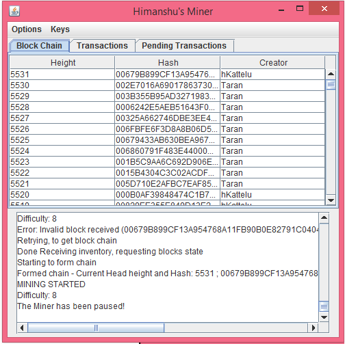
Hello reader, if you are looking at this then you are looking at the specifications for my crpytcoin miner. Essentially, this is a project for the CSE260 class where I had to make a miner for my professor's version of bitcoin, Cryptcoin. Cryptcoin follows the bitcoin white paper specification so it is extremely similar. However, I am unable to share the actual code because it is from a class.
When the application is started, it prompts for a key pair. The user will either load or generate a key pair and the miner will start. The Miner frame contains a window similar to the Cryptcoin explorer that displays
all of the blocks on it's Block Chain and two more tabs. One tab displays all transactions in the pool, the other displays pending transactions to be placed in blocks. The Miner can also pause whenever it is not requesting the block chain by clicking
pause in the options menu. It can resume by pressing the pause button again. All information related to mining is displayed in the text field under the Block Chain display. It updates itself as the miner continues working.
The Miner may start to mine a fork if someone else sends a block at the same time or mines faster. This can be
resolved by simply pausing and unpausing the miner in the options menu.
Miner Node Classes
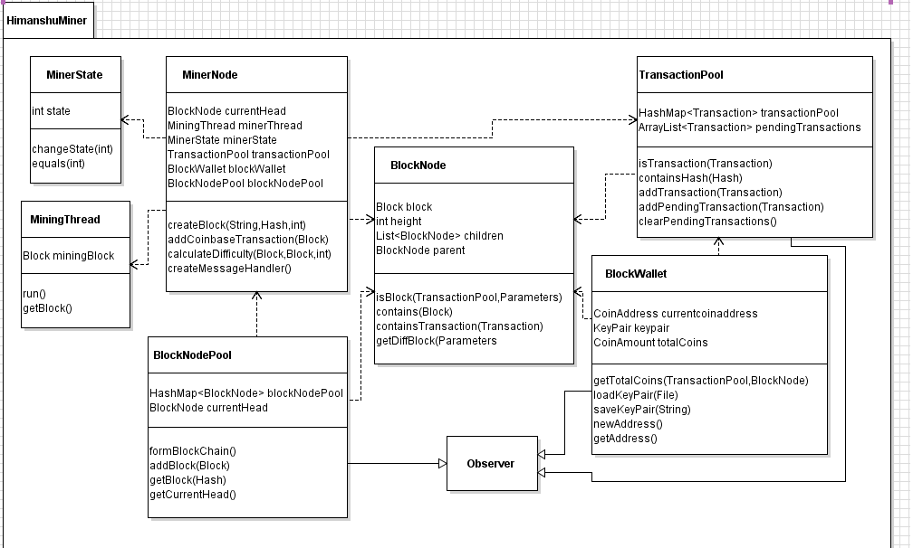
- MinerNode - A class whos objects represent Cryptcoin Miner Nodes. These Nodes can interact with each other to mine and trade CryptCoins.
- BlockNode - A class whos objects represent a Node in the Block Chain tree. Multiple nodes together can act as a Block Tree, where any individual path from the head node to a leaf represents an individual Block Chain. A given Block Node contains a reference to it's parent and children,and the block it contains. The "Ultimate parent" of the chain should always be the genesis block.
- BlockNodePool - A class whos objects represent a collection of all Block Nodes of the all the Blocks in all Block Chains. The Nodes are stored in a hash map and they are mapped to the prevHashes of their respective blocks, so that Nodes can be searched by hash easily.
- BlockWallet - A class whos objects represent a Cryptcoin Wallet. The Wallet uses a KeyPair to determine it's owner. It can communicate with a TransactionPool to determine the number of coins of the owner.
- TransactionPool - A class whos objects represent Collections of Cryptcoin transactions. The Transactions are stored in a Hash map and they are mapped to their own hashes, so thatTransactions can be searched by hash easily. It can also validate transactions, and calculate the total number of Cryptcoins that a given CoinAddress has.
- MinerState - A class that represents the state that a miner is in. The miner will respond differently to messages depending on the state that it is in. The state variable value describes what the miner is doing.
- MiningThread - A thread that can take in a block and mine it. The thread kills itself by return once it is done mining. Only one Mining thread is ever active at a given time for now.
Miner GUI Classes

- MinerMainFrame - A main frame extension which is used to put all of the Miner GUI pieces together into one application.
- MinerConsole - A GUI component for the Miner GUI that acts as the Java console and prints out information related to the miner.
- BlockChainDisplay - An extension of JPanel that is used to display information on all of the blocks on the miner's main block chain. Utilizes the observer pattern.
- TransactionPoolDisplay - An extension of JPanel that is used to display information on all of the transactions that the miner knows about. Utilizes the observer pattern.
- PauseMiner - A special action listener that will pause or unpause the miner
- SaveKeyPrompt - A special action listener will prompt the user for information to save keys.
Use Case Diagrams
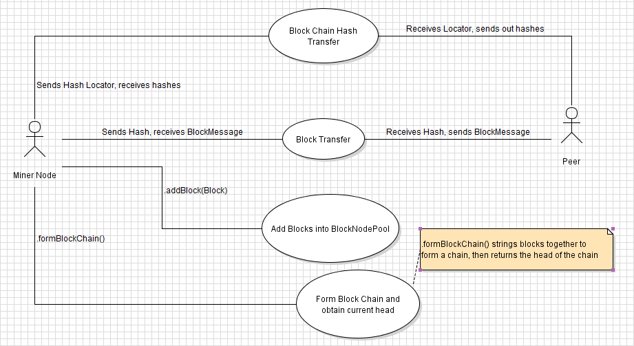
Tracking the Block Chain
- The Miner sends out a getBlocksMessage containing a hash locator to its peer. If the miner has just started, this hash locator is the Hash of the genesis block
- The Miner receives an Inventory Message containing a set of hashes. The miner will then send out all of those hashes in a getDataMessage, and send the last hash of the set in a getBlocksMessage
- The Miner receives BlockMessages. It will add the blocks inside them to its BlockNodePool as it receives them. It will also add the transactions inside the blocks into the TransactionPool
- Once the Miner receives an Inventory Message containing ONLY the hash locator it sent out, it is done requesting the block chain. It will switch state to form the block chain
- The Miner will call .formBlockChain() on the BlockNodePool, and it will string the Blocks together to create a Block Chain. The pool will return the current head of the main Chain to the Miner.
- Supposing we have lost track of the current head, we can simply go back to step 1 using the most recent hash locator to receive current head of the chain once more.
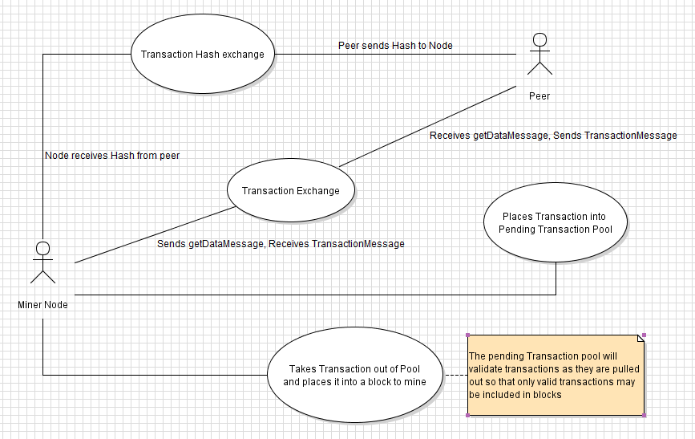
Accepting Transactions
- The Miner receives a Transaction type hash in an inventory message
- The Miner will send out a getDataMessage containing that hash, and receive a Transaction Message
- The Miner will take the Transaction from that message and add it to the pending Transaction Pool
- When the Miner creates a block, the Transaction Pool will validate the pending transactions. The valid pending transactions will be added into the block.
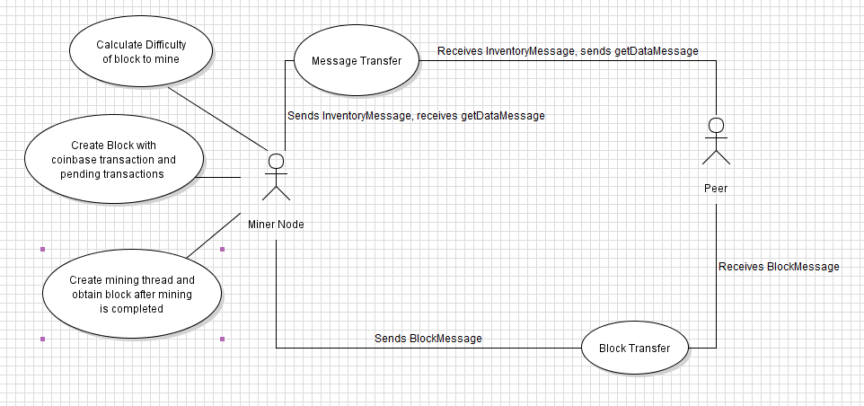
Constructing Valid Blocks
- The Miner calculates the difficulty by using the current main chain Head obtained from the peer's block chain
- The Miner obtains a Coin Address from the Block Wallet and uses it to create a Block
- The Miner checks for pending transactions. If there are valid pending transactions, they will be added into the block in addition to a coinbase transaction. Otherwise, simply add a coinbase transaction.
- The Miner will create a Mining Thread containing the block to be mined
- The Mining Thread will mine the block by incrementing the nonce. Once it is done, it will return, killing itself
- The Miner repeatedly calls .isAlive() on the Mining Thread. Once the thread is dead, the miner calls .getBlock() to receive the mined block.
- The Miner sends an inventory message to its peer containing the mined block's hash. The peer will send a getDataMessage containing that hash in response.
- The Miner sends a BlockMessage to the peer containing the mined block
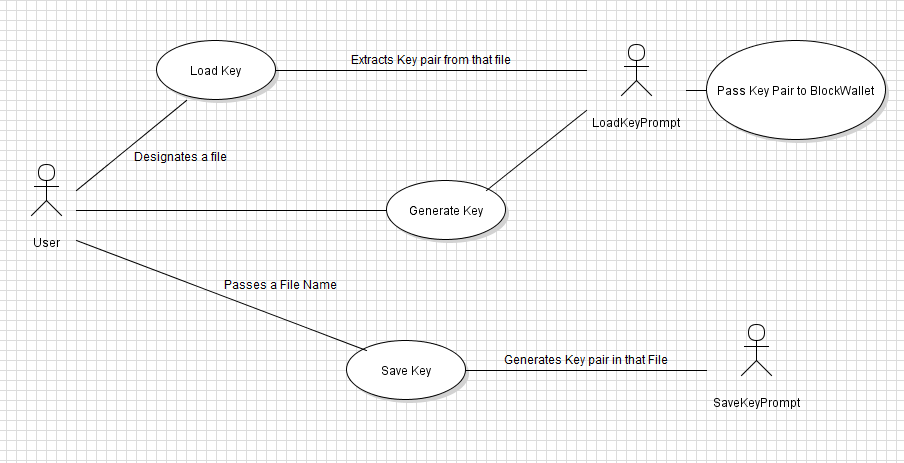
 |
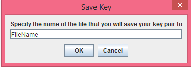 |
Key Handling
- On startup, the Miner prompts the User if they would like to Load a Key Pair
- If Yes is selected, a file chooser will come up and the user will select a file containing the key pair they wish to use. If it is invalid, the user will be notified by the Miner Console and a new key pair will be generated
- If No is selected, a key pair will be generated by the Block Wallet
- When the Miner begins mining, it will use the coin address that corresponds to the key pair being used, and the owner ID of the key pair. If a key pair is generated, the owner ID will be "Himanshu"
- At any point, the User may go to the Keys menu and select 'Save Keys'
- The User will be prompted to input a file name, and the current key pair will be saved to a file with that name. If a file exists with that name, it will be overwritten. If the file is invalid, the Miner Console will inform the user that saving has failed, and the key pair will not be saved.
Sequence Diagrams
Receiving a Block Message
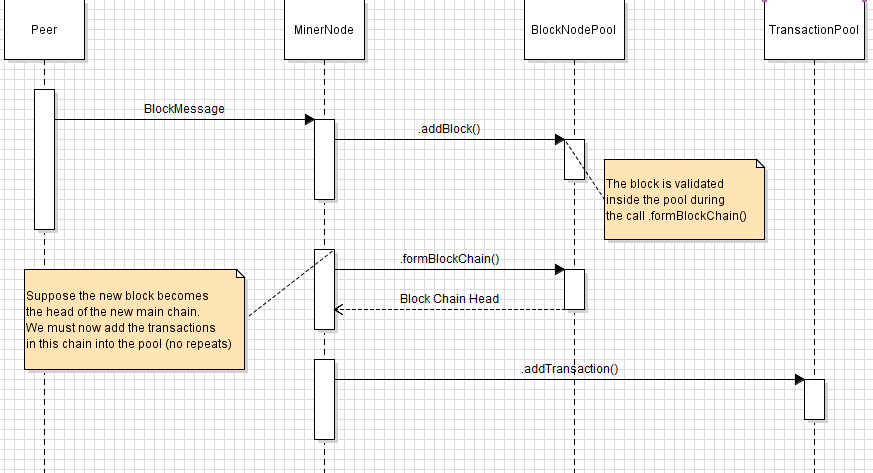
Receiving a Transaction Message
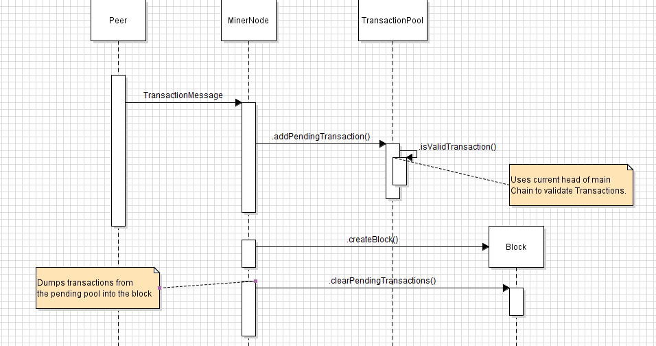
Mining and publishing a block
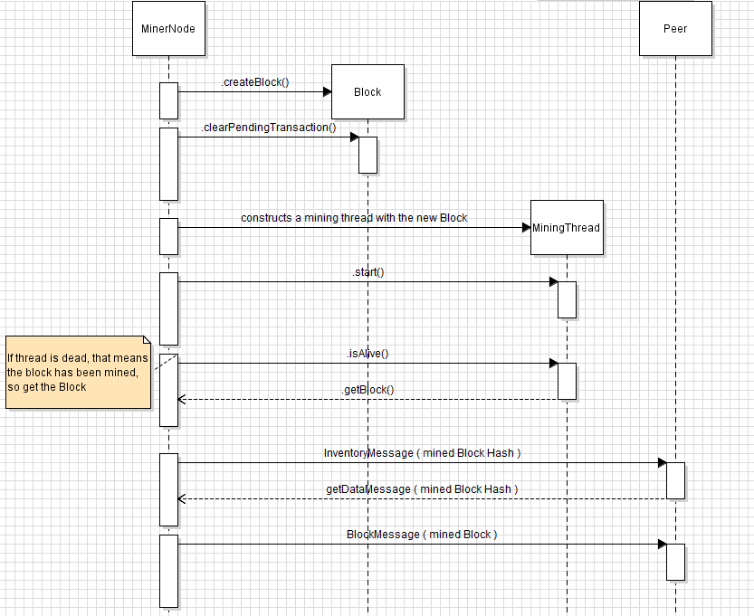
Validating a Block
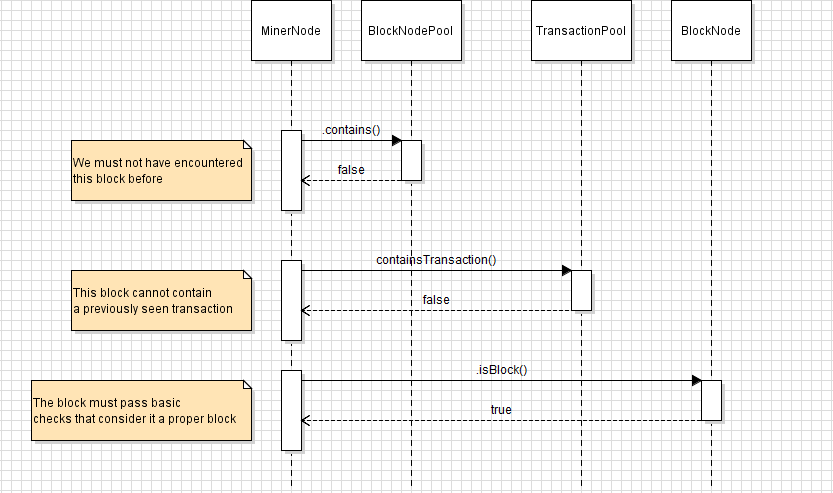